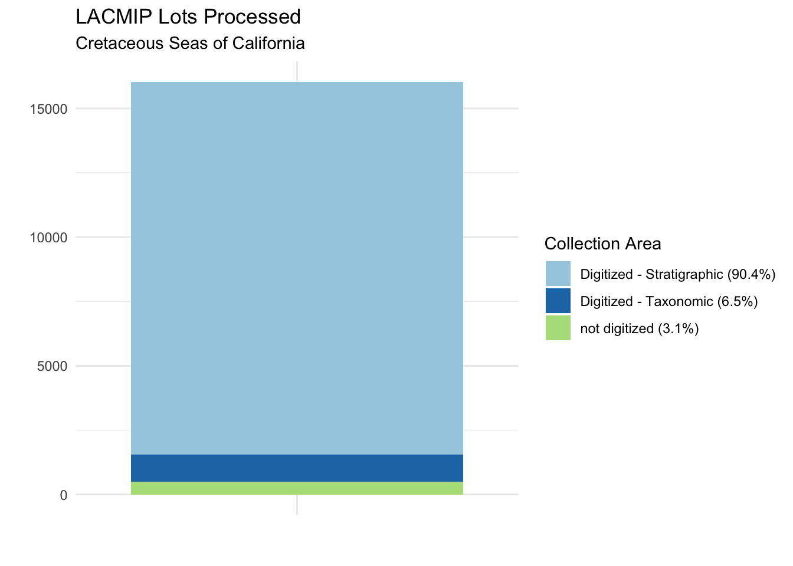
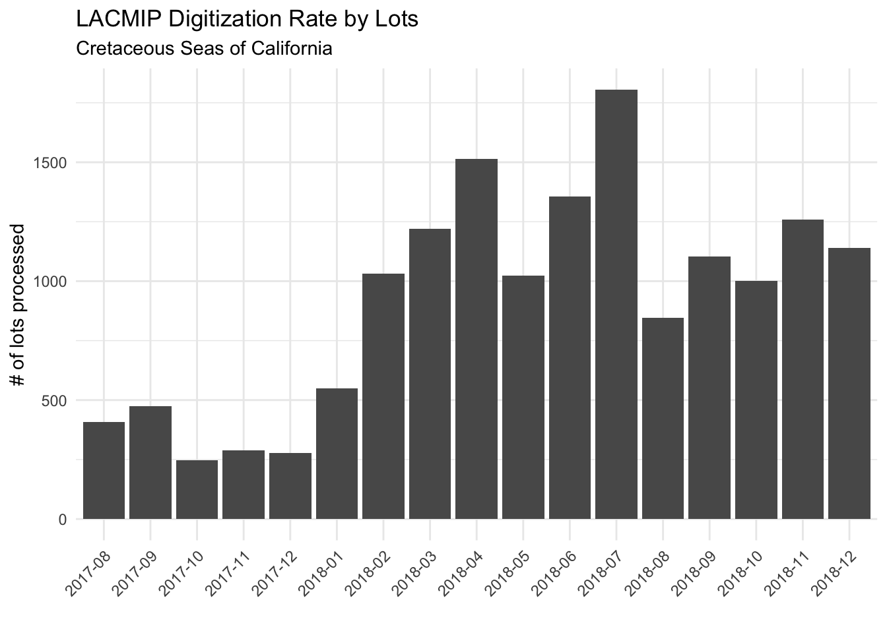
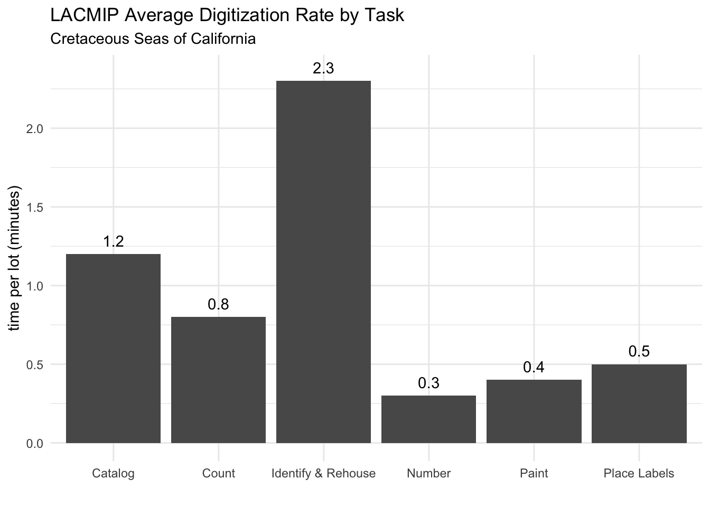
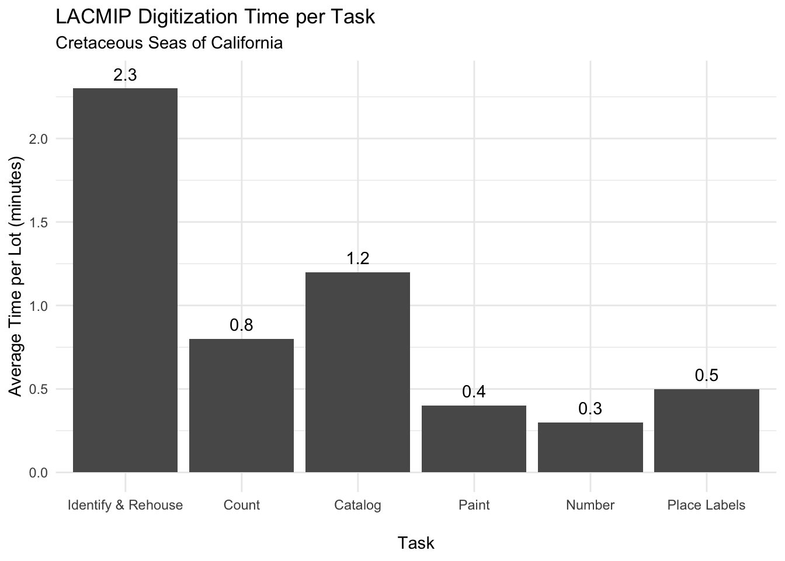
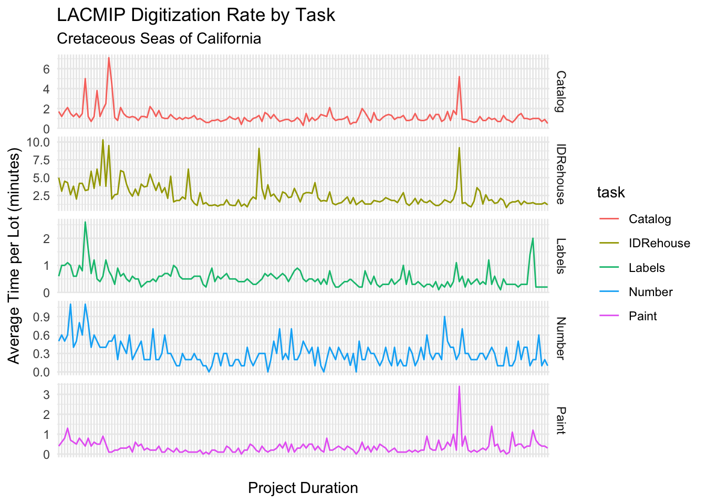

This document contains R code originally written to analyze the results of the “Cretaceous Seas of California” digitization project, supported by funding from the National Science Foundation (NSF DBI 1561429). The code below is designed to be reused with any dataset formatted to track daily digitization progress in the same way. A data template is available here.
If you want to re-use this code, you will need to open this file in R. Begin by loading the Tidyverse library (if you haven’t already, you will also need to install the Tidyverse package):
library(tidyverse)You can also choose to redefine the following project variables:
project <- "Cretaceous Seas of California" #shows up as a graph subtitle
width <- 15 #default dimension (inches) for saving JPG versions of graphs
height <- 10 #default dimension (inches) for saving JPG versions of graphsAt this point you are ready to load the digitization time-tracking data you want to analyze into R. Edit the filename here to analyze a different dataset. Make sure your data file is in the correct working directory and formatted according to the template linked above.
data <- read_csv("K-CA-Digitization_2019-01-31.csv", na = character())Use the function below to report on the number of specimen lots processed by this project.
lots <- function(data) {
#build table to summarize the number of lots processed by collection type
buildLots <- data %>%
select(matches("LOTS_")) %>%
summarise_all(funs(sum(., na.rm = TRUE))) %>%
gather("lot type","count") %>%
mutate("%" = round((count/sum(count)*100),1)) %>%
mutate(`lot type` = sub("LOTS_","",`lot type`)) %>%
mutate(`lot type` = sub("st","stratigraphic",`lot type`)) %>%
mutate(`lot type` = sub("tx","taxonomic",`lot type`))
#calculate total lots processed and
#save as an object in the global environment to access from markdown text
totalLots <<- buildLots %>%
filter(`lot type`=="stratigraphic" | `lot type`=="taxonomic") %>%
summarise(count = sum(count)) %>%
as.numeric(.[1])
#output file with results
write_csv(buildLots, "output_lots.csv")
}A total of 15542 specimen lots were digitized during the Cretaceous Seas of California project. Not all specimens were digitized, mostly due to poor quality of the original specimen. We can see a breakdown of lots processed by digitization status and collection area from the results of the function above:

Use the function below to report on total supplies used for this project, and their cost. Edit the values in setPrice to set different costs in dollars per unit.
supplies <- function(data) {
#set variables for rehousing supply prices, units in dollars
setPrice <- tibble(
`box-3x1.5` = "0.242",
`box-3x3` = "0.268",
`box-3x4` = "0.372",
`box-3x6` = "0.578",
`box-4x6` = "0.698",
`box-6x6` = "0.779",
`plastic-3x3` = "1",
`plastic-6x6` = "1",
`vial-7dr` = "0.75",
`vial-3dr` = "0.50",
`vial-1dr` = "0.25")
#turn setPrice variables into a factor
unitPrice <- as.numeric(c(setPrice))
#build table to calculate price per unit (note that the column names of the supplies
#are important because the code below relies on them sorting alphabetically)
buildSupplies <- data %>%
select(matches("REHOUSE_")) %>%
summarise_all(funs(sum(., na.rm = TRUE))) %>%
gather("supply","quantity") %>%
mutate(supply = sub("REHOUSE_box3x1.5","archival paper box, 3x1.5 inches",supply)) %>%
mutate(supply = sub("REHOUSE_box3x3","archival paper box, 3x3 inches",supply)) %>%
mutate(supply = sub("REHOUSE_box3x4","archival paper box, 3x4 inches",supply)) %>%
mutate(supply = sub("REHOUSE_box3x6","archival paper box, 3x6 inches",supply)) %>%
mutate(supply = sub("REHOUSE_box4x6","archival paper box, 4x6 inches",supply)) %>%
mutate(supply = sub("REHOUSE_box6x6","archival paper box, 6x6 inches",supply)) %>%
mutate(supply = sub("REHOUSE_plastic3x3","archival plastic box, 3x3 inches",supply)) %>%
mutate(supply = sub("REHOUSE_plastic6x6","archival plastic, 6x6 inches",supply)) %>%
mutate(supply = sub("REHOUSE_vial7dr","glass vial, 7 dram",supply)) %>%
mutate(supply = sub("REHOUSE_vial3dr","glass vial, 3 dram",supply)) %>%
mutate(supply = sub("REHOUSE_vial1dr","glass vial, 1 dram",supply)) %>%
mutate("cost ($)" = round(quantity*unitPrice,2))
#calculate total supply cost and
#save as an object in the global environment to access from markdown text
totalCost <<- sum(buildSupplies$`cost ($)`)
#output file with results
write_csv(buildSupplies, "output_supplies.csv")
}The total cost for the Cretaceous Seas of California project was $4491.54. We can see a breakdown of costs by supply item from the results of the function above:
| supply | quantity | cost ($) |
|---|---|---|
| archival paper box, 3x1.5 inches | 929 | 224.82 |
| archival paper box, 3x3 inches | 423 | 113.36 |
| archival paper box, 3x4 inches | 206 | 76.63 |
| archival paper box, 3x6 inches | 215 | 124.27 |
| archival paper box, 4x6 inches | 169 | 117.96 |
| archival paper box, 6x6 inches | 276 | 215.00 |
| archival plastic box, 3x3 inches | 104 | 104.00 |
| archival plastic, 6x6 inches | 22 | 22.00 |
| glass vial, 7 dram | 2956 | 2217.00 |
| glass vial, 3 dram | 1296 | 648.00 |
| glass vial, 1 dram | 2514 | 628.50 |
Use the function below to report on the affect that this project had on the quantity and quality of taxonomic identifications for lots processed during its course.
identifications <- function(data) {
#build table to calculate taxonomic identification actions by type
buildIdentifications <- data %>%
select(matches("ID_")) %>%
summarise_all(funs(sum(.,na.rm = TRUE))) %>%
gather("identification action","count") %>%
mutate(`identification action` = sub("ID_genusChange","genus name updated or redetermined",`identification action`)) %>%
mutate(`identification action` = sub("ID_speciesChange","species name updated or redetermined",`identification action`)) %>%
mutate(`identification action` = sub("ID_sp","evaluated but could not assign species name",`identification action`)) %>%
mutate(`identification action` = sub("ID_rank-up","taxonomic rank moved up ",`identification action`)) %>%
mutate(`identification action` = sub("ID_rank-down","taxonomic rank moved down ",`identification action`)) %>%
mutate(`identification action` = sub("ID_new","taxonomic identification assigned for the first time",`identification action`)) %>%
mutate("% total lots" = round((count/totalLots*100),1))
#calculate the total percent of specimen lots affected by taxonomic identification action and
#save as an object in the global environment to access from markdown text
totalIdentifications <<- sum(buildIdentifications$`% total lots`)
#output results as file
write_csv(buildIdentifications, "output_identifications.csv")
}A total of 65.3% of specimen lots had their taxonomic quality improved during the Cretaceous Seas of California project. We can see a breakdown of taxonomic improvements from the results of the function above:
| identification action | count | % total lots |
|---|---|---|
| genus name updated or redetermined | 825 | 5.3 |
| species name updated or redetermined | 239 | 1.5 |
| evaluated but could not assign species name | 60 | 0.4 |
| taxonomic rank moved up | 689 | 4.4 |
| taxonomic rank moved down | 595 | 3.8 |
| taxonomic identification assigned for the first time | 7748 | 49.9 |
Use the function below to report on the rate of digitization over the lifespan of this project.
digitizationRate <- function(data) {
#build table to summarize number of lots processed over time
buildDigitizationRate <- data %>%
select(matches("LOTS_|date")) %>%
mutate("lots" = LOTS_st + LOTS_tx) %>%
separate(date, c("yyyy","mm","dd"), sep = "-") %>%
unite("month", c("yyyy","mm"), sep = "-") %>%
select(month,lots) %>%
na.omit() %>%
group_by(month) %>%
summarise(lots = sum(lots))
#calculate the mean number of lots processed per month and
#save as an object in the global environment to access from markdown text
averageLots <<- mean(buildDigitizationRate$lots)
#output results to file
write_csv(buildDigitizationRate, "output_digitizationRate.csv")
#graph digitization rate by month
graphDigitizationRate <<-
ggplot(buildDigitizationRate, aes(x = month, y = lots)) +
geom_col() +
labs(title = "LACMIP Digitization Rate by Lots",
subtitle = project,
y = "# of lots processed",
x = "") +
theme_minimal() +
theme(axis.text.x = element_text(angle = 45, hjust = 1, vjust = 1))
#output graph to file
ggsave("output_digitizationRate.jpg", plot = graphDigitizationRate,
width = width, height = height, units = "cm", dpi = "print")
}The Cretaceous Seas of California project digitization rate is graphed below by the number of lots processed over time, an average of 914 specimen lots per month.

Use the function below to report on the time required to perform each of the core tasks associated with specimen digitization.
digitizationTask <- function(data) {
#streamline main data for task time analysis
buildDigitizationTask <- data %>%
mutate(lotsProcessed = select(., matches("LOTS_"),-LOTS_uncataloged)
%>% rowSums(na.rm = TRUE)) %>%
mutate(lotsRehoused = select(., matches("REHOUSE_"))
%>% rowSums(na.rm = TRUE)) %>%
mutate(lotsIdentified = select(., matches("ID_new"))
%>% rowSums(na.rm = TRUE)) %>%
mutate(lotsReidentified = select(., matches("ID_"),-ID_new)
%>% rowSums(na.rm = TRUE)) %>%
mutate(minutesTotal = select(., matches("TIME_"),-ID_new)
%>% rowSums(na.rm = TRUE)) %>%
filter(lotsProcessed!=0) %>%
mutate(minutesPerIDRehouse = round(`TIME_idRehouse`*60/lotsProcessed,1)) %>%
mutate(minutesPerCount = round(`TIME_count`*60/lotsProcessed,1)) %>%
mutate(minutesPerPaint = round(`TIME_paint`*60/lotsProcessed,1)) %>%
mutate(minutesPerCatalog = round(`TIME_catalog`*60/lotsProcessed,1)) %>%
mutate(minutesPerLabels = round(`TIME_labels`*60/lotsProcessed,1)) %>%
mutate(minutesPerNumber = round(`TIME_number`*60/lotsProcessed,1)) %>%
select(date, matches("LOC_"), matches("minutes"), lotsProcessed, lotsRehoused, lotsIdentified, lotsReidentified)
#output results to file
write_csv(buildDigitizationTask, "output_digitizationTask.csv")
#calculate average minutes per specimen lot per task
buildDigitizationTaskAvg <- tibble(
"Task" = c("Identify & Rehouse", "Count", "Paint", "Catalog", "Place Labels", "Number"),
"Time (min/lot)" = c(round(mean(buildDigitizationTask$minutesPerIDRehouse, na.rm = TRUE),1),
round(mean(buildDigitizationTask$minutesPerCount, na.rm = TRUE),1),
round(mean(buildDigitizationTask$minutesPerPaint, na.rm = TRUE),1),
round(mean(buildDigitizationTask$minutesPerCatalog, na.rm = TRUE),1),
round(mean(buildDigitizationTask$minutesPerLabels, na.rm = TRUE),1),
round(mean(buildDigitizationTask$minutesPerNumber, na.rm = TRUE),1)))
#(FIX - set factor to re-order tasks in graph, by natural sequence)
#graph average minutes per specimen lot per task
graphDigitizationTaskAvg <<- buildDigitizationTaskAvg %>%
ggplot(aes(x = Task, y = `Time (min/lot)`, label = `Time (min/lot)`)) +
geom_bar(stat = "identity") +
labs(title = "LACMIP Average Digitization Rate by Task",
subtitle = project,
y = "time per lot (minutes)",
x = "") +
theme_minimal() +
geom_text(vjust = 0, nudge_y = 0.05)
#output graph to file
ggsave("output_graphDigitizationTaskAvg.jpg", plot = graphDigitizationTaskAvg, width = width*1.5, height = height, units = "cm", dpi = "print")
#calculate average minutes per specimen lot per task over time
buildDigitizationTaskTime <- buildDigitizationTask %>%
select(date, starts_with("minutes")) %>%
gather("task","time",-date, na.rm = TRUE) %>%
group_by(date, task) %>%
summarise(minutesPerSpm = sum(time)) %>%
mutate(task = sub("minutesPer","",task))
#graph average minutes per specimen lot (all tasks) over time
graphDigitizationTaskTime_total <<- buildDigitizationTaskTime %>%
filter(task == "minutesTotal") %>%
ggplot(aes(x = date, y = minutesPerSpm)) +
geom_point() +
geom_smooth(method = lm) +
labs(title = "LACMIP Digitization Rate by Time per Lot",
subtitle = project,
y = "time per lot (minutes)",
x = "") +
theme_minimal() +
theme(axis.text.x = element_text(angle = 45, hjust = 1, vjust = 1))
#output graph to file
ggsave("output_digitizationTaskTime_total.jpg", plot = graphDigitizationTaskTime_total, width = width*1.5, height = height, units = "cm", dpi = "print")
#graph average minutes per specimen lot per task over time
graphDigitizationTaskTime_task <<- buildDigitizationTaskTime %>%
spread(task, minutesPerSpm) %>%
select(-Count, -minutesTotal) %>%
filter_all(all_vars(!is.na(.))) %>%
gather("task", "minutesPerSpm", -date) %>%
ggplot(aes(x = as.factor(date), y = minutesPerSpm, group = task, color = task)) +
geom_line() +
#coord_cartesian(ylim = c(0, 20)) +
facet_grid(rows = vars(task), scales = "free") +
labs(title = "LACMIP digitization rate by task",
subtitle = project,
y = "time per lot (minutes)",
x = "project duration (days)") +
theme_minimal() +
theme(axis.text.x = element_blank())
#output graph to file
ggsave("output_digitizationTaskTime_task.jpg", plot = graphDigitizationTaskTime_task, width = width*1.5, height = height, units = "cm", dpi = "print")
}The average time per specimen lot per task is graphed below.  The average time to process a specimen lot including all tasks is graphed below.
graphDigitizationTaskTime_total A comparion between tasks over time is graphed below.
graphDigitizationTaskTime_task